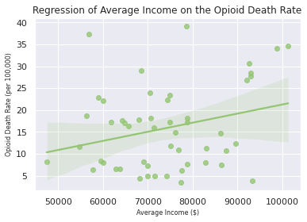

This interactive graph displays the nominal GDP of the UK economy between 1955 and 2021.
The second chart shows how global populations have aged since 1950 and the predicted future trends.
This second graph, displaying IMF lending as a percentage of global GDP, shows that 1984 was a much riskier year to invest compared to 2022.
The second visual encoding uses stacked bars and allows the countries populations to be compared using their relative proportion of the whole bar.
Wikipedia was used as it compiles the data from hundreds of companies financial reports, many of which are PDF’s and are hard to access.
In 2019 the US states with the highest drug overdose rates are concentrated in the northern-east coast region of America.
There has been little progression in the gender diversity of programming languages users.
The amount of data produced is predicted to increase exponentially.
“States with higher average incomes will have lower opioid death rates”
Within each income category, a spread of different death rates is seen. The states with highest incomes also have some of the highest death rates.
“The opioid death rate will fall as the average state income increases, displaying a negative correlation”
The regression results show a counter-intuitive positive correlation, as income increases the opioid death rate rises.